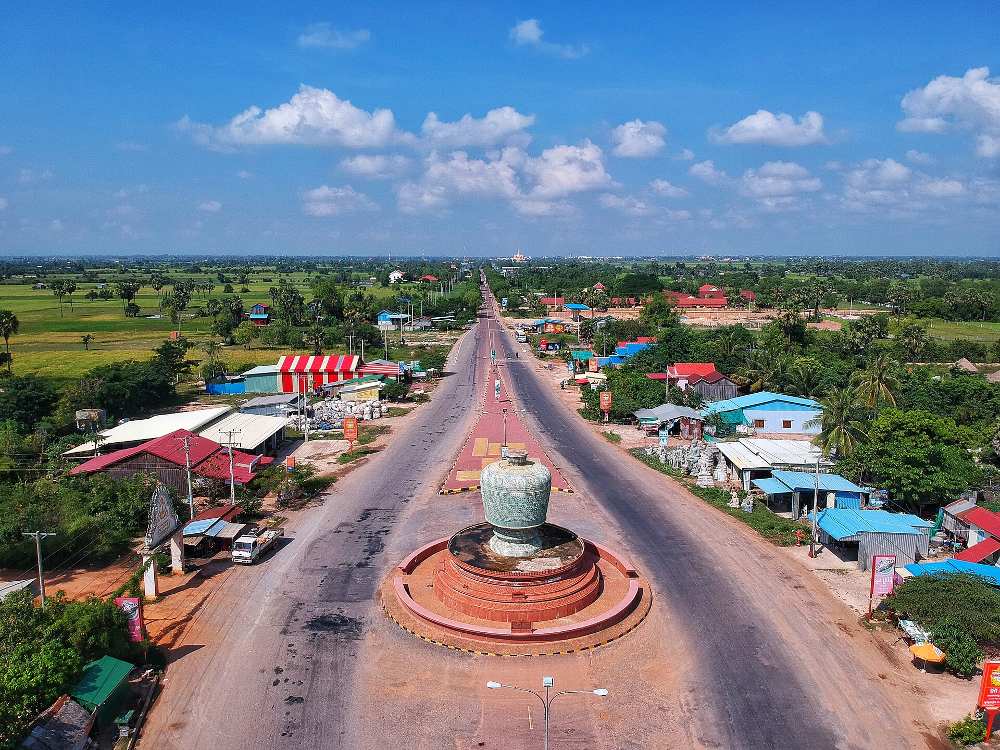

Pursat (Khmer: ពោធិ៍សាត់, meaning "Floating Banyan") is a province of Cambodia. It is in the western part of the country and borders clockwise from the north: Battambang province, the Tonlé Sap, Kampong Chhnang province, Kampong Speu province, Koh Kong province, and East Thailand. It lies between the Tonle Sap and the northern end of the Cardamom Mountains. The Pursat River bisects the province, running from the Cardamoms in the west to the Tonle Sap in the east. The fourth largest province of Cambodia in area, Pursat ranks only 14th in population. The region is accessible by National Highway 5, by boat, rail and by numerous smaller roads. The capital, Pursat town, lies 174 kilometres north west of capital Phnom Penh by road and 106 kilometres south east of Battambang.
